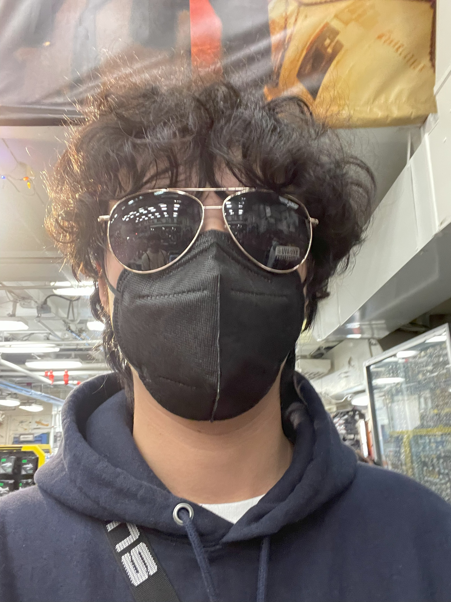

Portfolio of Guangyang Chen

About Me
This is me back in the time of December 2021 (near the end of covid) putting a random sunglasses on at the souvenir shop in USS Midway Aircraft Carrier Museum of San Diego. I was going with my friends of first year in UC Santa Cruz since one of them is from SD. I spent the whole winter break staying at his place cause I'm international student (had nowhere to go) and they're glad to have me there.
If you don't know me, I'm a senior at UC Santa Cruz majoring in Computer Science: Game Design, right now taking CMPM147, CMPM170, and CMPM176.